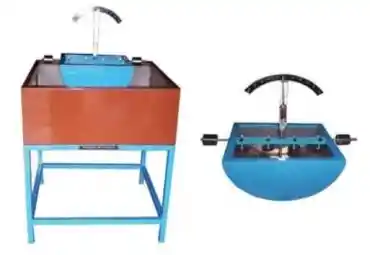

Metacentric Height Experiment
Introduction
The Metacentric Height is the distance between the center of gravity and the metacenter of a floating body.
It determines the stability of the body in water. This experiment involves measuring the metacentric height
using theoretical and experimental methods.
Determination of Metacentric Height
Apparatus Required
- A Tank
- A Floating Ship which contains a horizontal beam at its middle and a movable pointer on a graduated scale at the center of the horizontal beam.
- Weights
Test Procedure
Test procedure to find metacentric height of a floating body is as follows:
- Take an empty tank and fill it with water up to 2/3rd of its height and note down the height of water level (Z1).
- Now place the floating ship in the tank and note down the rise in the water level (Z2).
- Adjust the floating ship in such a way that the pointer should show zero reading on the graduated scale.
- After adjusting, add weight (w1) to the horizontal beam of floating ship at a known distance (Y) from the center of the beam.
- Now the ship will tilt at some angle on one side; observe the tilt angle on the graduated scale and note it down.
- Repeat the same procedure 4 more times by keeping the load constant and varying the distance or by keeping the distance constant and varying the load.
- Finally, calculate the metacentric height using the given formula.
Experimental Setup
Here is the experimental setup used for determining the metacentric height:

Team Members
Lakshya Gupta, Zorawar Singh, Sarthak Dixit, Vishal, Urvashi